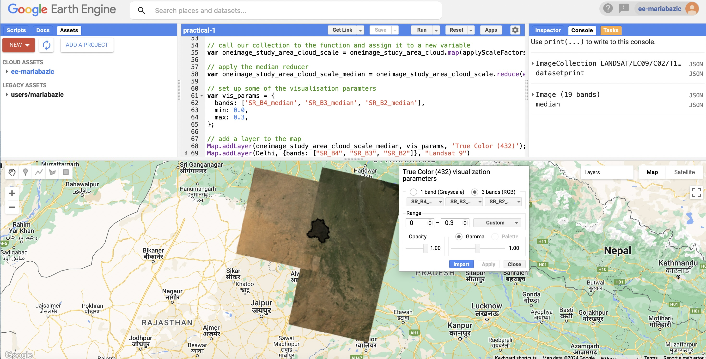
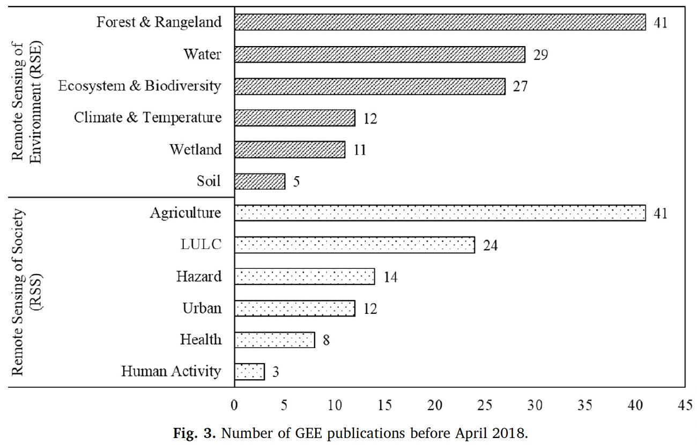

5 Week 5 - Google Earth Engine (GEE)
5.1 Summary
This week we were introduced to Google Earth Engine (GEE) which is a tool used as a geospatial processing service. The programming language for GEE is typically JavaScript, but there a Python API is available too, both of which can be used to create queryable applications.
Important Terms
Image = a raster that has bands
Feature = a vectors which has attributes and geometry
ImageCollection = image stack
FeatureCollection = feature stack (lots of polygons)
5.1.1 User Interface & Backend
GEE has a two sides to its operation. The backend (aka the “Server side”) and the frontend (aka “User Interface”). The backend of GEE is where complex computations are processed as the server carries out tasks through using the var and ee. functions, and data collected from the chosen satellites are stored. However it is important to note that the server won’t show anything on the user interface unless Map.addLayer is used to call the variable into a layer. The frontend is the visual display of what code is being run and added to the map layers. Here legends, graphs and other feature can be added to showcase different aspects of what is being analysed. Polygons can be drawn or selected through entering coordinates and zoom levels can automatically be applied.
The image below is a screenshot of how GEE looks like in editor mode, as it displays the backend at the top of the screen, alongside a console to its right that indicates what processes have run, and the user interface below to display the layers that have been selected and called.

Image source: Screenshot of Google Earth Engine Editor from local drive (2024)
5.1.2 Scale
It is important to mention that GEE uses a top-down approach when rendering scale (aka resolution) of satellite imagery. As indicated in the image below, it layers each pixel of the chosen location, which is then reduced by region, or by neighbourhood where a specific parameter of the window would need to be indicated (aka specifying the kernel).

Image source: Google Earth Engine (2024)
5.2 Applications
There are many ways in which Google Earth Engine has been applied. According to its catalog, it has multiple datasets such as landcover, climate & weather, terrain, night-time imagery and more, which are available to researchers. The image below is an example of the Global Forest Watch which used GEE to “detect changes in forest cover”. Their dashboard has been extended to offer insight on landcover, climate and fires globally.

Image source: Global Forest Watch (2014)
Additionally Wang et al. (2020) have noticed that there is a difference in GEE use between environmental and social remote sensing. Remote sensing of society can be used to analyse areas to perceive its development or for particular policies that are yet to be implemented, although agriculture is relatively significant too, whereas environmental analysis is more concerned with climate and physical land use.

Image source: Wang et al. (2020)
Heydari et al. (2024) conducted a study where they used GEE for drought predictions in Iran where they used several indicies. They extracted NDVI, along with temperature index values and had to validate their results, as part of processing data for predictions. Spectral and temporal filters were extracted in addition to spatial ones, and they found that pre-processed data was accessible. However, they did acknowledge certain limitation of GEE regarding processing and modelling, which were not extensively outlined, but were nevertheless able to perform necessary steps of their research.
5.3 Reflection
I really enjoyed working with GEE. I have never encountered anything like it. I particularly like how both the user interface and backend is simultaneously available to see, which makes it easier to organise the code and understand the visual outputs. The use of Google Earth Engine has plumeted in recent years, and its interesting to see the extend to which it can be applied to for analysis. I am keen to continue using GEE as I am sure it will become relevant at some point in the future. Although it is easier to map out the physical features in GEE, and somewhat harder to gain visualisations of social features, it does not discourage me from using it, as data can be imported from census and can be combined to produce certain output in the user interface. It is very beneficial to both researchers and academics to have an abundance of data to chose from and analyse, which I find particularly exciting as there are many datasets that can be combined for several purposes, both when analysing physical and human features of the world.
5.4 References
Google Earth Engine (2024) https://developers.google.com/earth-engine/guides/scale
Global Forest Watch (2014) https://maps.googleblog.com/2014/02/monitoring-worlds-forests-with-global.html
Heydani, H. et al. (2024) Innovative data clustering method improved drought prediction in heterogeneous landscapes using GEE-derived remote sensing indicies. Remote Sensing Applications: Society and Envrionment. 33, pg 1-24. [Online] Available via: https://www.sciencedirect.com/science/article/pii/S2352938523001945?casa_token=c1ICkOzPCiEAAAAA:jSqy7gbls-x_-NSwASr2zRkMRd2B33OtibS4Ck80w3O3WxwdFvBezO5-oPNQ37aoYmCp-2-Z
Wang, L. et al. (2020) A summary of the special issue on remote sensing of land change science with Google Earth Engine. Remote Sensing of Environment. 248, pg 1-9. [Online] Available via: https://www.sciencedirect.com/science/article/pii/S0034425720303722?casa_token=ZGNvttTlCr8AAAAA:QsF6p-ZoKnl742ohzFi_uQARdKgfXimXAYHo3sxsyBH09m4BmJRL615dkjCwGhhb8k_M02SE